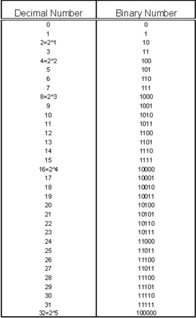

Le binaire est un systeme numerique aussi connu sous le nom base 2. Cela veut dire que l'on peut utiliser
deux caracteres differents pour ecrire un nombre (le 0 et le 1) contrairement au systeme decimal (base 10) qui peut
en utiliser 10 (0,1,2,3,4,5,6,7,8,9). Lorsqu'on compte en base 10 on incremente la valeur des unites jusqu'a
9 puis on incremente les dizaines et le 9 devient un 0: 8=>(0)9=>10. A chaque fois que le chiffre le plus a
gauche atteint 9, on ajoute un nouveau chiffre a incrementer devant tous les autres. C'est le binaire non-signe.
Equivalences base2-base10

Le binaire signe
Afin de pouvoir representer des nombres negatifs en binaire il faut:
Choisir le nombre de bits (=chiffres) qu'on va utiliser (avec 8 bits on pourra aleer de -128 a 128)
Mettre des 0 devant le chiffre en binaire non-signe qui est negatif: ex: pour 21 sur 8 bits => 21b10=10101b2 => 00010101
Remplacer tous les 0 par des 1 et tous les 1 par des 0: ex: 00010101 => 11101010
Ajouter 1 a la valeur obtenue (les regles d'addition sont les memes qu'en decimal): ex: 11101010 + 00000001 = 11101011
On obtient ainsi le nombre -21 en binaire signe
Si on additionne 21 et -21 en binaire signe on a: 00010101 + 11101011 = (1)00000000 = 00000000 le 1 se trouvant au debut disparait car il est le 9e bit et on est sur 8 bits (c'est l'overflow)
Les nombres a virgule et la norme IEEE754
La norme IEEE754 permet de representer (plus ou moins bien) les nombres a virgule en binaire. Explication de la norme IEEE754: